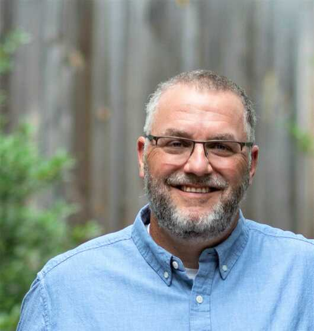
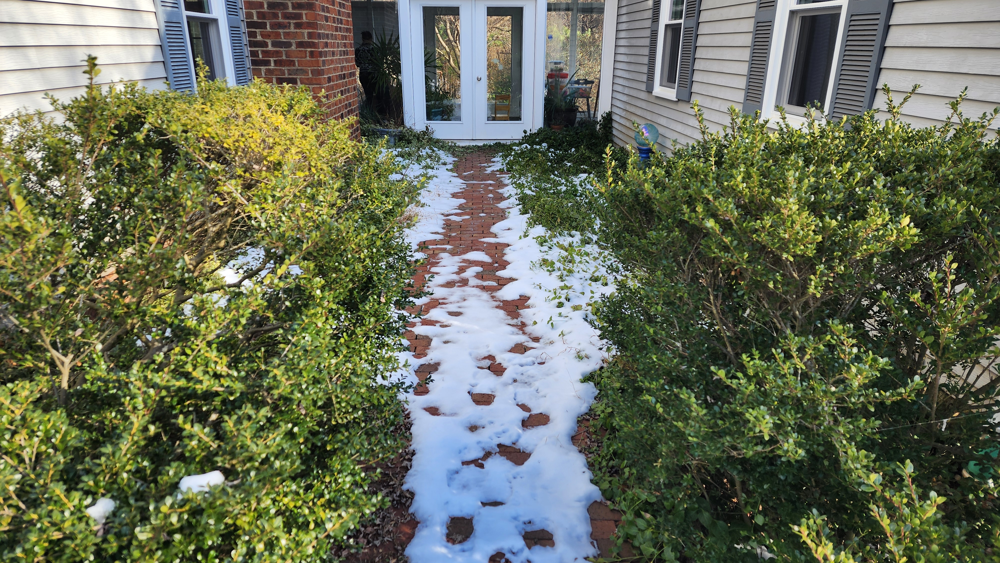

Patrick Crusse
As a Charlottesville native, Patrick spent many years exploring the woods and creeks of central Virginia. That love of the outdoors naturally developed into an interest in plants and outdoor spaces.
Patrick began mowing lawns at the age of eight. His first full time job was as a landscape laborer and, climbing the ladder, he eventually managed several crews for a local design-build firm.
After graduating from West Virginia University in 1998, with a Bachelor of Science in Landscape Architecture, Patrick began working with clients to develop and implement landscape plans for their homes and offices.
His grass roots work history led Patrick to open his own business in 2004 and he continues to practice as a Landscape Architect today. He brings decades of hands-on experience, and a multi-faceted knowledge of outdoor construction to every project.

Interests
Church and family are the most important part of Patrick's life, and he continues his passion for the outdoors. In his free time, Patrick enjoys hiking, fishing, and camping. If a motorcycle can be combined with any of these activities, it's a bonus.
Portfolio
Over the years, Patrick has worked with homeowners, builders, and property managers to develop plans for residential, commercial, and nonprofit properties. Combining his education in Landscape Architecture with his work experience, Patrick has been able to develop landscape designs and management plans for a diverse collection of clients and properties.
Call: (434) 326-4039